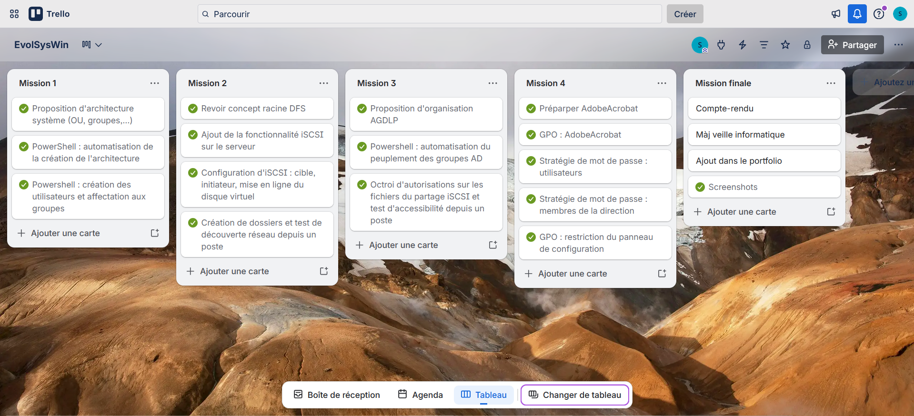
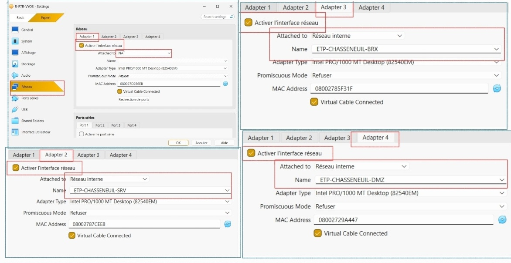
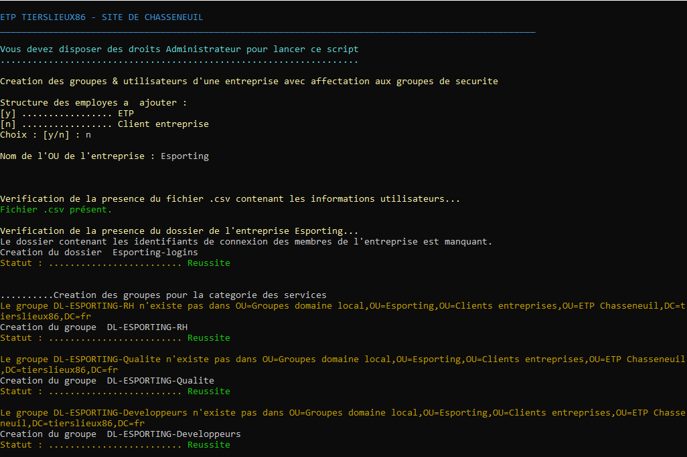
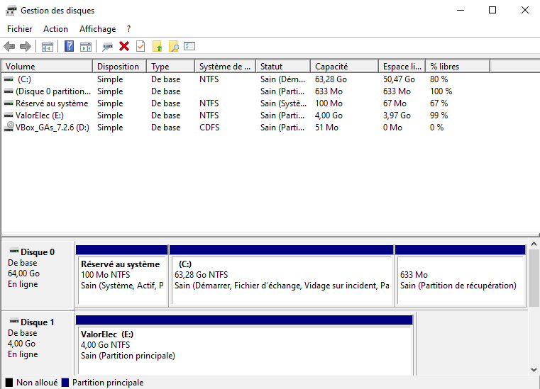
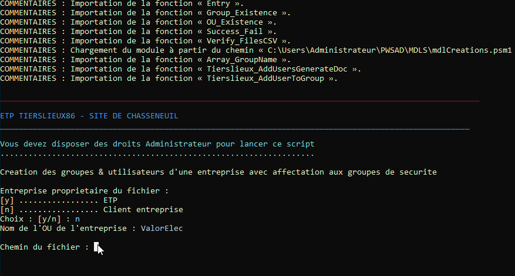
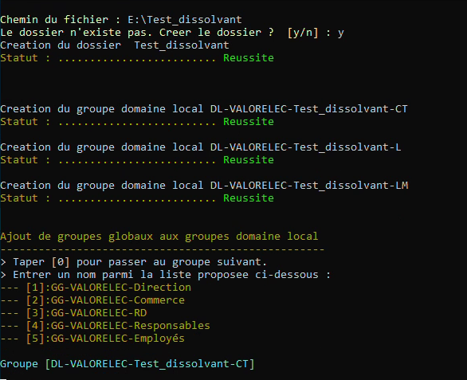
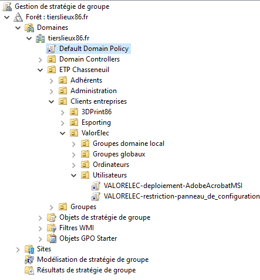
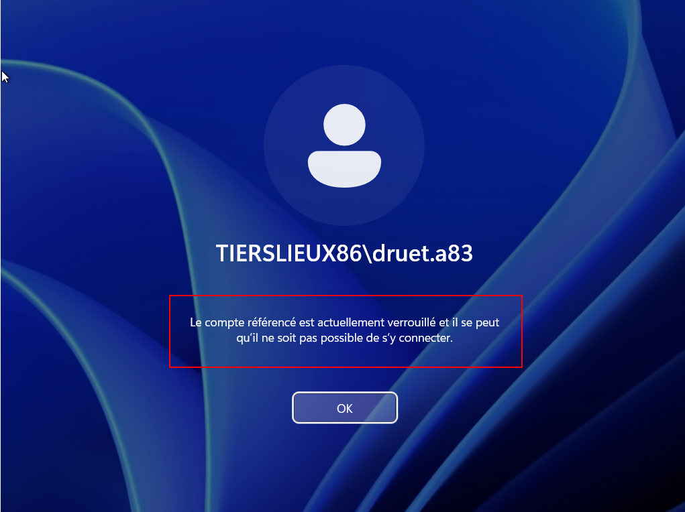

EvolSysWin
Tierslieux86 est une entreprise qui met à disposition des espaces de travail partagé (ETP) pouvant accueillir des employés d'entreprise. Pour ce faire, elle propose entre autres d'intégrer dans son domaine Active Directory la structure de ses clients, un service de stockage de fichiers et la création de comptes utilisateurs. Au cours de cet atelier, nous aurons à intégrer l'entreprise cliente ValorElec, en suivant un plan composé de quatre missions.
Télécharger le contexte spécifique du devoir (Chasseneuil)
Télécharger la documentation technique des quatre missions projet EvolSysWin (74 pages)
Consulter le dépôt des scripts PowerShell : https://github.com/brd-cnd/PWSAD
Mission 1 — Créer la maquette de l'infrastructure système
Télécharger la documentation technique de la mission 1 du projet EvolSysWinOrganisation du projet
Le maître d'ouvrage, le CNED, a exprimé ses besoins via les contextes des ETP de Poitou et Chasseneuil. En tant qu'unique personne sur le projet, j'ai été maître d'œuvre et cheffe sur ce projet. Réalisé selon une méthode en cascade, ce dernier a connu un suivi via l'application en ligne Trello.

L'outil Trello, disponible en ligne, demande une création de compte pour les nouveaux utilisateurs
Rappel de l'infrastructure
Nous nous appuyerons sur l'atelier précédent (InfraSite) pour ce travail. L'infrastructure utilisée a été maquettée avec Packet Tracer. Selon le contexte donné, nous sommes en présence d'un réseau segmenté en VLAN, avec un relais DHCP permettant la communication entre la salle serveurs et les bureaux. L'adresse publique du routeur est 10.36.253.20/24. Le Wi-Fi est sécurisé à l'aide d'une clé WPA2-PSK.

Une représentation du réseau de l'ETP de Chasseneuil sous Packet Tracer
Pour simuler ce réseau de manière physique, nous nous sommes appuyés sur un prototype virtuel basé sur VirtualBox, et composé d'un routeur VyOS, d'un serveur Windows 2022 implanté dans le réseau des serveurs, et d'un poste Windows 11 Éducation qui sera dans le réseau des bureaux.

Configuration réseau des machines sous VirtualBox
Tâche 1 — Architecture Active Directory
Nous avons déjà à notre disposition une architecture système donnée dans l'atelier InfraSite. Nous pourrions toutefois rajouter, pas seulement pour ValorElec mais pour toutes les autres entreprises, une unité d'organisation qui concentre tous les groupes d'étendue domaine local de l'entreprise. Cette nouvelle unité serait au même niveau que celle des groupes globaux, des utilisateurs et des ordinateurs.
Comme nous sommes partis pour affecter ce changement à toutes les entreprises clientes de l'ETP, nous allons modifier le script chargé de créer les sous-unités d'organisation d'une entreprise.
Organisation en groupes
À chaque service (direction, commerce, recherche et développement) ou statut (employé ou responsable) son groupe global. De surcroît, à chaque groupe global, son groupe domaine local. Au final :
| Service/statut représenté | Groupe global | Groupe domaine local |
|---|---|---|
| Direction | GG-VALORELEC-Direction | DL-VALORELEC-Direction |
| Commerce | GG-VALORELEC-Commerce | DL-VALORELEC-Commerce |
| Recherche et développement | GG-VALORELEC-RD | DL-VALORELEC-RD |
| Responsables | GG-VALORELEC-Responsables | DL-VALORELEC-Responsables |
| Employés | GG-VALORELEC-Employés | DL-VALORELEC-Employés |
Tâche 2 — Script PowerShell
Le script PowerShell a été conçu afin d'intégrer n'importe quelle entreprise, du moment que cette dernière a son arborescence présente au sein de l'Active Directory. À l'exécution du script, on demandera à l'utilisateur si l'infrastructure à laquelle appartiennent les utilisateurs est une entreprise cliente ou bien l'ETP. C'est une étape décisive qui permet de fixer les chemins des OU et les noms des fichiers utilisateurs sur lesquels on se basera afin de chercher et créer les objets au bon endroit.
D'abord, on s'occupe de la création d'OU et de groupes. Pour ce qui est de la modification de l'architecture système, une vérification de l'existence des OU et des groupes est faite avant la création d'un objet. Pour les groupes globaux recensés dans le tableau, on vérifie s'il n'existe pas son jumeau d'étendue domaine local, et si oui, on demande à l'utilisateur si on souhaite ajouter le groupe global comme membre de ce groupe domaine local.
Ensuite, on intègre les utilisateurs. La création des comptes utilisateurs extrait le nom et le prénom de chaque salarié de l'entreprise, ainsi que du service et du statut auquel il appartient. Le login est créé à partir du nom et du prénom. Une fonction est dédiée à la création du mot de passe : ce dernier contient douze caractères, alternant chiffres, majuscules, minuscules et caractères spéciaux. Après sa création de compte, l'utilisateur est affecté ensuite au groupe global du service et du statut auquel il appartient.
Résultats de la mission 1

Nouvelle organisation basique d'une entreprise représentée dans l'arborescence du domaine Tierslieux86
Pour ce qui est de la modification du script, il a suffit de rajouter une chaîne de caractères, "Groupes domaine local", dans le tableau qui recense les unités d'organisation à créer pour intégrer une entreprise.

Les unités d'organisation sont créées successivement, en informant de la réussite ou de l'échec de la création

Intégration des utilisateurs grâce aux informations d'un fichier CSV
Dans un cas réel, le fichier CSV peut être issu d'un fichier Excel, que l'ETP exige de la part de l'entreprise. Les logins sont par la suite stockés dans un dossier propre à l'entreprise sur le répertoire de l'administrateur : il faudra que ce dernier les communique aux utilisateurs.

Ensemble des fichiers Word édités à l'issue de l'exécution du script

Un fichier Word contenant les informations de connexion de l'utilisateur
Mission 2 — Mettre en place un serveur de fichiers
Télécharger la documentation technique de la mission 2 du projet EvolSysWinTâche 1 — Serveur de stockage iSCSI
L'idée retenue est d'ajouter la fonctionnalité "Cible iSCSI" au serveur contrôleur de domaine. Puis, il faudra configurer le serveur et créer un dossier qui servira de disque virtuel à être exposé. En ce qui concerne la configuration iSCSI, nous activons CHAP. Le processus de cette installation, notamment les choix à faire, sont détaillés dans la documentation technique de cette mission.
Tâche 2 — Étude d'une racine DFS
Une racine DFS définit le chemin qu'un utilisateur tape pour accéder à un dossier. Cela permet de fixer un nom qui peut être totalement différent du chemin où il se trouve réellement sur le serveur. On note deux types de racines DFS : les racines autonomes ou les racines de nom de domaine. Une racine autonome fait directement dépendre le chemin du serveur de fichiers. Si ce dernier est sujet à un incident, il se pourrait bien que les fichiers deviennent indisponibles.
Une racine de nom de domaine utilise le DNS d'Active Directory pour faire la correspondance entre le chemin de la ressource et la ressource elle-même, ce qui signifie qu'on peut mettre implémenter cette racine sur plusieurs serveurs, et éviter que la ressource devienne injoignable si un serveur tombe en panne.
Dans le cas de ValorElec, il serait préférable de prendre une racine DFS de nom de domaine. L'entreprise a déjà fait les frais d'un incendie qui, heureusement, n'a pas causé de pertes de données : autant faire le choix de la sécurité en prenant un système redondant. L'inconvénient est que ce système dépend d'Active Directory, alors qu'une racine autonome, non. Toutefois, ce défaut reste mineur car l'entreprise possède de toute manière des OU et des objets Active Directory qui la représentent, et qui lui permettent d'ailleurs d'avoir des droits modulaires sur les ressources partagées via le serveur de fichiers. Qui plus est, la racine DFS basée sur le nom de domaine cache le nom du serveur.
Résultats de la mission 2

Disque virtuel amené à être exposé pour ValorElec
On a un disque virtuel qui apparaît dans le gestionnaire des disques. Il suffit de les formater et de les mettre en ligne.

Le disque virtuel est bien créé
Depuis une session utilisateur, on peut vérifier que les dossiers créés et partagés sur ce disque apparaissent bien.

La découverte réseau détecte les fichiers qui sont exposés sur le disque virtuel
Mission 3 — Automatiser la mise en place de la sécurité sur les partages
Télécharger la documentation technique de la mission 3 du projet EvolSysWinTableau des droits
Il est clair qu'un commercial ne devrait pas pouvoir lire les fichiers de la direction, par exemple. Par contre, un commercial peut lire et modifier les fichiers de son service. Il en va de même pour la recherche : les chercheurs peuvent agir sur leurs propres fichiers, mais il n'y a pas de raison à ce qu'ils puissent voir ceux du commercial ou des directeurs. Donc, chaque service doit pouvoir lire et modifier les éléments qui lui appartiennent, et cela s'arrête ici. Néanmoins, il se peut que les chefs de projets, les responsables, aient besoin de consulter des fichiers de différents services pour se concerter ou prendre des décisions. Donc, il serait bon qu'ils aient un droit de lecture sur les fichiers des différents services. Ainsi :
- Toute personne appartenant à un service a un droit de lecture et de modification sur les fichiers appartenant à ce service
- Tout responsable a le droit de lecture sur les fichiers des autres services
- Les employés non affectés à un service n'ont aucune autorisation, quel que soit le fichier et son propriétaire
Tâche 2 — Script PowerShell
Au début, l'idée était de suivre le tableau ci-dessus. Soit SERVICE le nom d'un service. On crée trois groupes domaine local : DL-VALORELEC-SERVICE-L, DL-VALORELEC-SERVICE-LM et DL-VALORELEC-SERVICE-CT. Les suffixes sont explicites : sur un dossier à partager, on attribue un droit de lecture au groupe finissant par L, de lecture et modification pour le groupe finissant par LM, et un contrôle total pour celui qui finit par CT. On faisait la même chose pour les statuts.
Dans les faits, rien ne s'est passé comme prévu (voir « Problèmes rencontrés » en bas de page), même en autorisant les droits manuellement. Le temps passant en cette fin de mois de mars, on s'est alors proposé de changer de tactique : on crée des groupes domaine local selon le nom de la ressource. Dans ce scénario, on cible ou crée un fichier, et on lui confectionne trois groupes domaine local DL-VALORELEC-nomDuFichier-L, DL-VALORELEC-nomDuFichier-LM et DL-VALORELEC-nomDuFichier-CT. On ajoute comme membre de ces groupes les groupes globaux voulus de l'entreprise.
Résultats de la mission 3
À l'exécution du script, on demande le chemin du fichier à partager. S'il n'existe pas, on peut choisir de le créer.

Exécution du script Powershell IntegrationAGDLP2.ps1
Le script va créer des groupes domaine local en fonction du nom de la ressource à partager.

Création des groupes domaine local avec le droit en question en suffixe
Les groupes globaux sont récupérés via une liste et il suffit d'indiquer par leur numéro lequel intégrer dans le groupe domaine local spécifié. Pour arrêter l'ajout concernant le groupe domaine local courant, on entre le chiffre zéro.

Ajout des groupes globaux aux groupes domaine local
Vérifions les accès. Par exemple, monsieur Lenoir est un commercial de ValorElec : il a droit de modification sur les fichiers qui appartiennent à son service. Le test est concluant.

Création de fichiers dans un dossier des commerciaux par un employé du service
Par contre, monsieur Lenoir n'a pas accès aux dossiers qui concernent le département de recherche et développement.

Accès refusé au dossier destiné aux chercheurs
Ce n'est pas le cas de madame Renal, qui, en tant que responsable, a bien un accès en lecture à Test_dissolvant, bien qu'elle soit elle-aussi du service commercial. Elle ne peut toutefois pas écrire, comme cela a été montré en vidéo.
Mission 4 — Mettre en place les stratégies de groupe (GPO)
Télécharger la documentation technique de la mission 4 du projet EvolSysWinTâche 1 — Déploiement d'Adobe Acrobat
Pour respecter la contrainte du format de fichier (.msi), il faut au préalable effectuer quelques manipulations sur Adobe Acrobat tel qu'installé en tant que fichier exécutable. Il faut extraire les fichiers de l'archive .exe grâce à 7-zip, lancer une installation personnalisée via Powershell (msiexec /a), puis patcher le fichier AdobeRead.msi avec un fichier .msp. Le fichier .msi est ensuite partagé sur le réseau (dossier « Applications »), et la GPO s'applique à tous les utilisateurs de ValorElec.
Tâche 2 — Restrictions et stratégies de mot de passe
Pour les stratégies de mot de passe, nous allons configurer pour les utilisateurs la GPO « Default Domain Policy », tandis que pour le service de la direction, où cette stratégie est plus contraignante, nous allons devoir faire une PSO. Pour le panneau de configuration, on créera une GPO à lier à l'unité d'organisation des utilisateurs de ValorElec.
Résultats de la mission 4
Trois GPO sont appliquées : la Default Domain Policy pour la stratégie de mots de passe utilisateurs, VALORELEC-deploiement-AdobeAcrobatMSI pour le déploiement d'Adobe Acrobat, VALORELEC-restriction-panneau_de_configuration pour bloquer le panneau de configuration.

Les GPO sont appliquées au niveau des utilisateurs de ValorElec, sauf pour le mot de passe, qui est modifié sur la racine
En ce qui concerne la stratégie des mots de passe et de verrouillage des comptes des utilisateurs ne faisant pas partie du service de la direction, voici les paramètres entrés dans la GPO.

Paramètres appliqués sur l'ensemble des utilisateurs du domaine tierslieux86.fr
Pour la GPO d'Adobe Acrobat, nous remarquons qu'elle est effective.

Dans le panneau de configuration, Adobe Acrobat figure dans les programmes installés
Voici la Password Settings Object (PSO), qui permet d'appliquer sur le service de la direction de ValorElec une stratégie de mot de passe spécifique.

Création d'une PSO pour GG-VALORELEC-Direction
Ici, nous avons testé l'accès au panneau de configuration depuis un compte utilisateur appartenant à un employé de ValorElec.

L'accès au panneau de configuration est refusé
Si on essaie de changer le mot de passe pour une valeur plus faible (longueur trop petite, pas assez complexe), on tombe sur ce message :

Il est demandé un meilleur mot de passe
Enfin, pour le test de verrouillage, nous sommes aussi freinés par la GPO.

Le compte est verrouillé après deux tentatives ratées
Bilan
État des lieux
L'objectif de la mission était d'intégrer le client ValorElec à l'espace de travail partagé de Chasseneuil. Cela consistait à représenter l'organisation dans l'Active Directory, la création de compte et le peuplement de groupes, mais aussi à la mise à disposition de certains services tels qu'un serveur de fichier. Ces missions ont pu aboutir : les scripts Powershell ont non seulement répondu aux besoins de ValorElec, mais permettent aussi de généraliser l'intégration d'une entreprise quelconque à l'ETP.
Problèmes rencontrés
La tâche 2 de la mission 3 a été un casse-tête. Au départ, les groupes domaine local étaient générés à partir des statuts et services de l'entreprise. On partageait ensuite le fichier voulu et on accordait les droits aux groupes domaine local correspondant. Étrangement, des utilisateurs avaient des droits plus élevés que ce qui leur était permis sur certains fichiers. Plusieurs hypothèses ont été émises : un conflit avec le contrôle total donné à Tout le monde ? Une mauvaise suppression de l'héritage des droits ? Des vérifications et paramétrages manuels à radicalité croissante ont essayé de vaincre ce problème. Et à un moment, la machine a dû être réintégrée au domaine car un snapshot de trop avait été supprimé, ce qui a rompu les liens avec la version à jour de l'annuaire et a empêché de faire le lien avec les utilisateurs actuels. En parallèle, on cumulait les instantanés (environ 13) depuis le début de l'année 2026. Autant recommencer et recréer le domaine pour recommencer sur une base propre. L'attribution des droits a fonctionné à deux reprises comme souhaité, avant d'échouer à nouveau. Ce pourquoi il a été décidé de changer de plan, car du retard s'était accumulé.
Suggestions d'amélioration
On pourrait augmenter la sécurité des scripts Powershell et ajouter la gestion des erreurs. Pourquoi pas se renseigner sur ABE (Access-Based Enumeration) ? Il semblerait que, couplé à une racine DFS, cela permette une meilleure confidentialité. De cette manière, les personnes ne voient que les éléments sur lesquels ils ont des droits. En ce qui concerne le script d'octroi de droits sur les partages, étant donné que rentrer directement le chemin du fichier n'est pas sécurisé, il faudrait voir s'il est possible d'automatiser la création et la mise en ligne de disque virtuel avec iSCSI lors de l'intégration d'une entreprise. Par ailleurs, il faudrait également élaborer un script de retrait d'une entreprise cliente. Enfin, mieux encore : ne créer le groupe domaine local que s'il est non-vide.